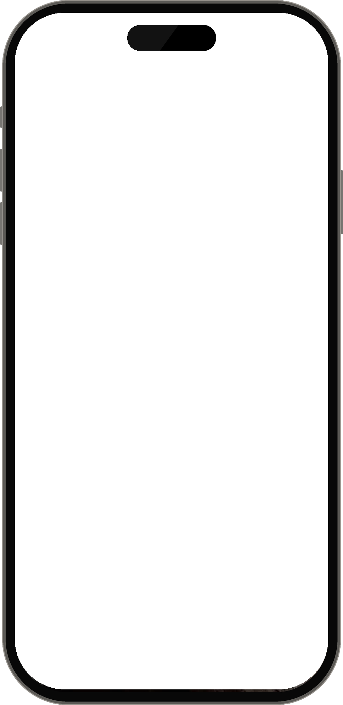
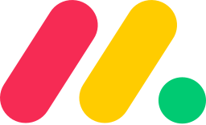
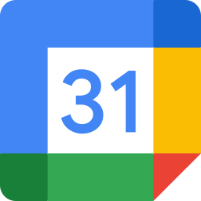

01
Softvérové riešenia na mieru
Interné systémy, webové aplikácie a nástroje postavené presne na váš proces. Žiadne ohýbanie krabicového softvéru.
- Na mieru
- Interné systémy
- Integrácie
AI engineer a web developer, Slovensko
Som Filip Haraj. Navrhujem a staviam softvérové riešenia na mieru, AI automatizácie a webstránky pre slovenské firmy. Celý projekt vediem sám od prvej konzultácie po spustenie, takže hovoríte priamo s tým, kto to programuje.


Monday.comWhatsAppGmail
Google CalendarGoogle MeetAI / OCRSoftvér na mieruCRMDashboardyWebstránky Monday.comWhatsAppGmailGoogle CalendarGoogle MeetAI / OCRSoftvér na mieruCRMDashboardyWebstránkyŠtyri typy riešení, z ktorých sa skladá väčšina mojich projektov. Často ich kombinujem: softvér na mieru pokryje váš proces, automatizácia spracuje dáta a CRM ich ukáže tímu.
Interné systémy, webové aplikácie a nástroje postavené presne na váš proces. Žiadne ohýbanie krabicového softvéru.
Automatické spracovanie faktúr, dokumentov a e-mailov. Prepojím systémy, aby sa dáta presúvali samy, bez prepisovania.
Moderné, rýchle a responzívne weby s admin rozhraním, cez ktoré si obsah spravujete sami.
Jedno miesto pre kontakty, obchody, faktúry a cashflow. Nastavím CRM tak, aby sedelo na váš proces, nie naopak.
Ukážka: automatické spracovanie faktúry
Každý z týchto projektov som sám navrhol, naprogramoval a nasadil — od prvej konzultácie až po spustenie. Sú to reálne systémy, ktoré dnes bežia u mojich klientov. O každom z nich som písal aj na LinkedIne ↗.
V prevádzke
Brány, ploty a zábradlia
Interaktívny chatbot, ktorý funguje ako kompletný sprievodca a konfigurátor pre brány, ploty, prístrešky či garážové brány. Klient si vyklikne produkt, vzor, farbu a rozmery a na konci hneď uvidí orientačnú cenu. Firma dostane e-mail s kompletnou špecifikáciou aj celou históriou chatu.
Okamžitá cena pre zákazníka 24/7 a kvalifikované dopyty priamo do schránky.
Konfigurácia v chatbote
Dopyt, ktorý príde firme do e-mailu
Zadanie
Mám za sebou vývoj interaktívneho chatbota, ktorý funguje ako kompletný sprievodca a konfigurátor pre exteriérové prvky — brány, ploty, prístrešky či garážové brány.
Spojili sme silu chatbota a cenovej kalkulačky do jedného plynulého zážitku, aby sme zákazníkom uľahčili výber a predajcom priniesli pripravené obchody.
Ako to funguje krok po kroku
Krok 01
Klient si postupne zvolí produkt — brány, ploty, zábradlia, prístrešky či garážové brány.
Následne vyberie preferovaný vzor výplne, farbu, prípadne doplnky a zadá rozmery. Všetko pomocou tlačidiel a obrázkov, bez zložitého písania.
Krok 02
Hneď na konci konfigurácie chatbot zákazníkovi zobrazí predbežnú cenovú ponuku. Žiadne zbytočné čakanie na odpoveď.
Krok 03
Firma okamžite dostane e-mail s detailnou špecifikáciou potrieb klienta — kontaktné údaje, produkt, vzor, rozmery, materiál, farbu aj orientačnú cenu.
Súčasťou e-mailu je celá história chatu, takže obchodník hneď vie, čo klient riešil.
Hlavné benefity
Pre zákazníka: okamžitá orientačná cena 24/7 a maximálne prehľadný výber bez frustrácie z hľadania.
Pre firmu: kvalifikované a presné dopyty priamo do schránky — s jasnými rozmermi, farbami a vzormi pripravenými na tvorbu finálnej ponuky.
V prevádzke
Obchod a predaj
Odpovede z webového dotazníka idú priamo do monday.com. AI vyhodnotí lead — vhodný klient si hneď vyberie termín hovoru podľa voľných kalendárov obchodníkov a dostane pozvánku na Google Meet. Po hovore sa faktúra vystaví automaticky, vrátane splátok.
Nulové riziko straty kontaktu a prehľad o každom obchode na jednom mieste.
Web, dotazník, CRM, e-maily a kalendár v praxi
Východisko
Mať klienta, ktorý sa k vám vracia s ďalšími projektmi, je tá najlepšia spätná väzba. S týmto klientom už máme za sebou úspešné prepojenia v minulosti a tentoraz išlo o celý obchodný proces — od vytvorenia kompletnej webovej stránky až po pokročilé napojenie na CRM systémy a kalendáre.
Cieľom bolo vytvoriť hladký a bezchybný ekosystém, kde zákazník plynulo prechádza od prvého kliku na webe až po vystavenie faktúry, a firme ušetriť desiatky hodín manuálnej práce týždenne.
Ako to funguje krok po kroku
Krok 01
Postavil som modernú webstránku s dotazníkom, ktorý slúži ako prvý filter pre potenciálnych klientov.
Všetky odpovede a dáta z formulára sa okamžite a bezpečne prenášajú priamo do monday.com CRM, kde s nimi obchodníci ďalej pracujú.
Krok 02
Zelená: ak sú odpovede zákazníka vyhovujúce, systém ho automaticky presmeruje na výber termínu hovoru.
Červená: ak klient kritériá nesplní, hovor si vybrať nemôže, ale dostane potvrdzujúci e-mail o zaznamenaní leadu.
Poistka: všetky stavy v CRM je možné kedykoľvek manuálne zmeniť pre prípad, že by systém vyhodnotil odpovede nesprávne.
Krok 03
Zákazník si zo zobrazených možností vyberie vyhovujúci čas.
Systém inteligentne preverí voľné kapacity v Google kalendároch obchodníkov.
Vybranému predajcovi okamžite príde notifikácia o rezervovanom hovore a zákazník dostane potvrdzujúci e-mail spolu s oficiálnou pozvánkou do Google Meet.
Krok 04
Obchodníci majú k dispozícii vlastný prehľadný dashboard. Po skončení hovoru vyplnia krátky formulár o výsledku rozhovoru a dohodnutých podmienkach.
Všetky dáta — vrátane dohodnutej ceny — sa automaticky zapíšu do monday.com, odkiaľ sa dá rovno vygenerovať a vystaviť faktúra.
Krok 05
Ak si klient zvolí platbu na splátky, systém v monday.com automaticky vytvorí viacero stĺpcov s dátumami splatnosti podľa jednotlivých mesiacov a ku každej splátke vie priradiť príslušnú faktúru.
Výsledok
Maximálna automatizácia biznis modelu, nulové riziko straty kontaktu a dokonalý prehľad vedenia o každom jednom obchode na jednom mieste.
V prevádzke
Účtovníctvo a financie
Stovky faktúr mesačne sa prepisovali ručne. Systém ich teraz sám stiahne z Gmailu, AI vyčíta dodávateľa, sumu, splatnosť aj VS a zapíše ich do dashboardu. Podľa sumy a VS z bankových výpisov ich označí ako zaplatené.
Žiadne chyby pri prepisovaní a úplný prehľad o cashflow.
Problém
Predstavte si, že vám mesačne prídu stovky faktúr. Každú jednu musíte stiahnuť z Gmailu, prepísať údaje do systému, skontrolovať a na konci mesiaca manuálne prechádzať bankové výpisy, aby ste zistili, či bola uhradená.
Presne s týmto problémom za nami prišla firma. Navrhli sme a implementovali komplexný automatizovaný systém, ktorý celú túto rutinu vyriešil od A po Z.
Ako to funguje krok po kroku
Krok 01
Systém monitoruje firemný Gmail a na základe predmetu automaticky identifikuje a sťahuje prichádzajúce aj odchádzajúce faktúry.
Krok 02
Umelá inteligencia (OCR) bleskovo prečíta PDF a vytiahne z neho všetky dôležité údaje — dodávateľa, sumy, splatnosť, variabilný symbol — a uloží ich do dashboardu.
Krok 03
Všetky extrahované dáta sa okamžite zapíšu do prehľadného dashboardu, ktorý sme pre firmu vytvorili na mieru. Firma tak má dokonalý prehľad o cashflow.
Krok 04
Do platformy denne ťaháme bankové výpisy. Akonáhle systém nájde zhodu v sume a variabilnom symbole, faktúru automaticky označí ako zaplatenú.
Výsledok
Firma eliminovala chyby pri ručnom prepisovaní, kompletne odbúrala manuálne dohľadávanie platieb v bankovníctve a ušetrila hodiny času, ktoré teraz môže investovať do rozvoja biznisu.
V prevádzke
Školstvo
Kompletne nový web školy, na ktorej študujem. Historický, no moderný a plne responzívny dizajn, zabezpečené admin rozhranie na pridávanie obsahu a AI chatbot, ktorý odpovedá na otázky a odkáže na správnu podstránku.
Škola si web spravuje sama a návštevníci nájdu odpoveď za pár sekúnd.
Pôvodný web → nový web na počítači
Mobil a AI asistent školy
Príbeh
Ako študent som sa denne pozeral na náš školský web — až kým som nedostal šancu ho celý prerobiť. Študovať teóriu je jedna vec, ale aplikovať ju priamo v praxi pre vlastnú školu je úplne iný level.
Dostal som príležitosť navrhnúť a vytvoriť novú webovú stránku pre Strednú priemyselnú školu stavebnú a geodetickú, Lermontovova 1, v Košiciach, kde sám študujem.
Ako to funguje krok po kroku
Krok 01
Prehľadný dizajn, ktorý rešpektuje históriu školy a zároveň je moderný — pre súčasných študentov aj budúcich uchádzačov.
Krok 02
Dôležité informácie sú na pár klikov, bez hľadania v neprehľadných menu.
Krok 03
Web funguje rovnako dobre na mobile, tablete aj počítači.
Krok 04
Škola si môže pridávať obsah na stránku sama, bez potreby developera.
Krok 05
Jednoduchý AI chatbot odpovie na základné otázky, prípadne odkáže priamo na požadovanú podstránku.
Krok 06
Nová stránka bola presmerovaná na existujúcu doménu, kde bežal starý web.
Výsledok
Najväčšou výzvou bolo skombinovať požiadavky vedenia školy s tým, čo od webu reálne očakávajú študenti a rodičia v každodennom živote. Výsledkom je moderný web, ktorý si škola spravuje sama.
V prevádzke
Onboarding klientov
Onboardingový bot na vlastnom čísle komunikuje prirodzenou rečou a vedie klienta k rezervácii konzultácie. Celá história chatu sa ukladá ku klientovi v CRM, bot sám zapíše e-mail a v stĺpci „status-bot“ vyhodnotí jeho záujem.
Čisté CRM, vytriedené leady a plný kalendár rezervácií.
Konverzácia s botom vo WhatsAppe
Dáta z chatu v monday CRM
Zadanie
Cieľom bolo vytvoriť onboardingového chatbota, ktorý funguje na vlastnom +421 čísle vo WhatsAppe a je plnohodnotným obchodným asistentom.
Informácie nemali zostávať uväznené v četovacej aplikácii. Podarilo sa vybudovať komplexný most medzi WhatsAppom a CRM platformou — dnes systém funguje úplne autonómne.
Ako to funguje krok po kroku
Krok 01
Celá história chatu sa v reálnom čase ukladá priamo ku klientovi do CRM na základe telefónneho čísla. Tím má dokonalý prehľad o každej interakcii bez toho, aby musel čokoľvek manuálne prepisovať.
Krok 02
Na základe analýzy konverzácie a vopred definovaných kritérií systém sám vyhodnocuje dôležitosť klienta. V stĺpci „status-bot“ okamžite vidno, kto je pripravený na obchod a komu treba venovať zvýšenú pozornosť.
Krok 03
Akonáhle klient v konverzácii uvedie svoj e-mail, systém ho okamžite identifikuje a zapíše do príslušného stĺpca v CRM.
Krok 04
Bot je nastavený tak, aby komunikoval ľudskou rečou — neformálne a priamo. Práve občasné vynechanie striktnej interpunkcie v rýchlych správach odbúrava bariéry a zvyšuje ochotu klientov pokračovať až k finálnemu cieľu: rezervácii konzultácie.
Výsledok
Čisté CRM, vytriedené leady, plný kalendár rezervácií a pripravenosť na klienta z histórie chatu — bez manuálnej práce.
Proces
Jeden kontakt, jasná cena a priebežné ukážky. Viete, čo platíte a kedy to dostanete.
Krok 01
Prejdeme váš proces a nájdeme miesta, kde tím stráca čas. Zistíte, čo sa oplatí automatizovať a čo nie.
Krok 02
Dostanete technický návrh, rozpis prác a pevnú cenu. Žiadne prekvapenia na faktúre.
Krok 03
Stavím systém a priebežne ukazujem, ako vyzerá. Pripomienky zapracujem hneď, nie až na konci.
Krok 04
Nasadím, zaškolím tím a ostávam k dispozícii aj po spustení.
O mne
Spájam svet moderného webového vývoja a AI automatizácií s jediným cieľom — zbaviť firmy manuálnej práce a ušetriť im čas aj peniaze.
Hľadám miesta, kde ľudia strácajú čas rutinnými úlohami, a nahrádzam ich inteligentným softvérom. Pracujem ako freelancer z Košíc, projektovo aj dlhodobo.
Kontakt